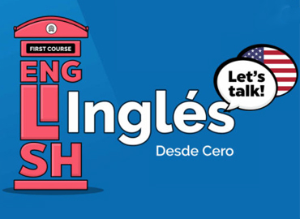

- Teléfono: 55 7155 9410
- Dirección: Av. Plaza de la Constitución Mz. #27 Lote 43 C-2 Plazas de Aragón, Nezahualcóyotl, Edo. Mex.
Curso especializado de corte de cabello
Evaluacion en linea
Al finalizar el curso, los participantes contarán con conocimientos, habilidades, destrezas y aptitudes para realizar cortes de cabello, con actividades que van desde preparar las condiciones de uso, higiene y seguridad de los utensilios de trabajo y mobiliario a utilizar, para posteriormente recibir al cliente, preparar la cabellera para el proceso de corte y sugerir recomendaciones, hasta realizar el servicio solicitado.

Vigilancia Presencial de Bienes y Personas
Evaluacion en linea
El cursante adquirirá los conocimientos en materia de diseño de servicio de vigilancia de bienes y personas, adiestran elementos de seguridad en el lugar de trabajo para el servicio de vigilancia de bienes y personas y supervisan la prestación del servicio de vigilancia de bienes y personas.

Curso de implementación de Manufactura esbelta
Evaluacion en linea
Curso orientado a la mejora operativa de procesos, dirigido a profesionales en el cual se instruye a los participantes en la implementación del sistema de manufactura esbelta en cualquier cadena de valor producto o servicio.
Diplomado en administración de empresas
En este curso los participantes adquirirán conocimientos referentes al diseño, implantación, ejecución, administración y mejora de procesos administrativos empresariales y con ello evitar “cuellos de botella”, retrasos operativos, ineficiencia en aprovechamiento de materia prima, además de mejorar tanto la agilidad como la precisión en la toma de decisiones a nivel directivo.

Curso de formación de instructores
Evaluacion en linea
El participante adquirirá los conocimientos y técnicas de enseñanza y manejo de grupos necesarios para certificarse como instructor en cualquier área de expertiz del participante ante la SEP.
Curso de formación de consultores
Evaluacion en linea
Curso de formación que permitirá a los participantes diagnosticar la situación actual de una organización y obtener resultados de información, utilizar modelos de referencia con indicadores que permitan realizar un reporte diagnóstico, desarrollar una propuesta que ayude a la organización con base en el resultado del diagnóstico, implementar la propuesta que ayudará a la organización y finalmente poder evaluar los resultados de su propuesta.
Diseño de cursos en linea formativos de capital humano
Evaluacion en linea
Curso en el cual los participantes adquirirán conocimientos para el correcto desarrollo de cursos de formación en línea desde su planificación, diseño, elaboración de contenido y la verificación de la funcionalidad del curso.
Diseño de cursos para formación de capital humano
Evaluacion en linea
Los cursantes desarrollarán conocimientos para la planeación de cursos en línea, el desarrollo de sus manuales, contenido y de sus instrumentos para la evaluación. Asimismo, para el desarrollo de programas de capacitación y de formación.
Curso en gestión organizacional
En este curso el participante será capaz de ejecutar diagnósticos acerca de la estructura y funcionalidad de una organización y proponer cambios a su estructura que beneficien la eficiencia operativa y administrativa en la organización y su mejora continua.
Team building
Es un curso orientado a personas que laboran dentro de una organización o bien son líderes de su propia organización y aprenderán de manera objetiva a desempeñarse dentro de un equipo de trabajo o bien a formarlo con una visión incluyente interdisciplinaria, diseñando los canales de comunicación y toma de decisiones de manera eficiente y siempre orientado a resultados.
Planeación y ejecución de proyectos para PyMES
En este curso adquirirás los conocimientos suficientes y necesarios en materia de planeación y ejecución de estrategias, con los cuales podrás llevar a cabo la identificación, planeación, ejecución, gestión y Arranque de cualquier proyecto, esto con una visión práctica y realista para asegurar el éxito del proyecto en cualquier organización ya sea pública o privada con un enfoque siempre orientado a resultados. Este curso tiene un enfoque teórico-práctico.
Costos PyMES
Este curso ofrece a sus participantes adquirir los conocimientos necesarios en materia de cálculo monetario de operaciones lo que abarca en términos generales rendimientos, monetización de horas hombre y materia prima, lo que le permitirán principalmente determinar eficiencias monetizadas de las operaciones de la empresa y determinar pérdidas con exactitud. Lo anterior permitiendo a los participantes planear con exactitud acciones o planes a realizar para aumentar la eficiencia en las operaciones de la empresa y con ello aumentar ganancias.
Comunicación efectiva en el trabajo
Curso enfocado en el diseño y mejora de los canales de comunicación en las organizaciones enfocados en mejorar la eficiencia y eficacia de los flujos de información lo que genera una mayor eficiencia operativa en las organizaciones
Liderazgo
Curso en el que los participantes adquirirán todos los conocimientos y aptitudes necesarios en materia de en materia de liderazgo planeación, gestión y ejecución de proyectos con una visión realista y orientada siempre a garantizar el éxito de un proyecto cualquiera que este sea.
Supervisión Efectiva
Curso orientado a desarrollar habilidades directivas y de supervisión de grupos de trabajo basado en el desarrollo y aprovechamiento de las habilidades individuales de los miembros del equipo para maximizar la eficiencia y la sinergia del equipo siempre orientado a la obtención de resultados.
Auditoria de procesos y mejora continua
Este curso brinda los conocimientos teorico-practicos para ejecutar un proceso integral de auditoria a los procesos tanto administrativos como operativos de una organización y en base a eso ser capaz de hacer propuestas de mejora orientadas siempre a la maximización en la eficiencia administrativa y operativa de las organizaciones.

Procura planeación-ejecución.
Este curso está orientado a dotar a sus participantes de conocimientos técnico-administrativos para poder llevar a cabo de una manera eficaz y eficiente el proceso de procura ya sea de insumos o equipo en orden de maximizar el rendimiento tanto de un proyecto o de una unidad de negocio funcional. Todo siempre con un enfoque realista y enfocado siempre en el ciclo gestión-ejecución.
Atención al cliente y calidad en el servicio
En este curso los participantes aprenderán la conceptualización, así como enfoques y pilares de la calidad, así como la conceptualización de servicio, los factores que influyen en las expectativas del cliente, los criterios generales que los clientes evalúan, así como los momentos de verdad y ciclos de servicio.
Curso especializado de ventas de productos y servicios
Los cursantes aprenderán funciones elementales que una persona debe realizar para ser competente en la venta especializada de productos y servicios realiza cierre de ventas, y le da al cliente servicio post-venta También establece los conocimientos teóricos básicos y prácticos con los que debe contar la persona encargada de esta función, así como las actitudes relevantes en su desempeño.

Diplomado en administración de empresas de Alimentos y Bebidas
En este curso los participantes adquirirán conocimientos referentes al diseño, implantación, ejecución, administración y mejora de procesos administrativos en el giro de alimentos y bebidas y con ello evitar “cuellos de botella”, retrasos operativos, ineficiencia en aprovechamiento de materia prima, además de mejorar tanto la agilidad como la precisión en la toma de decisiones a nivel directivo.
Curso de profesionalización de meseros
Es un curso en el cual aprenderás de manera profesional el “servicio” en diferentes situaciones y necesidades, de acorde a la gama del restaurante o bien en cafeterías o “fast food”, siempre con un enfoque que brinde satisfacción al cliente y por consiguiente un aumento de ventas.
Curso de cocina con certificación
Formación profesional de las personas que preparan alimentos, desde su correcta manipulación y el funcionamiento adecuado de la materia prima, los utensilios y equipo de cocina, pre-elaboración, elaboración y montaje de platillos para los lugares donde se oferta el servicio de alimentos
Bartender
Formación profesional para todo aquel que prepara y sirve bebidas a los clientes de establecimientos de servicio de bebidas como bares y cantinas, desarrollando habilidades y actitudes para crear coctelería internacional y nacional que le permitan optimizar su trabajo y brindar un mejor servicio al cliente

Barista
Formación profesional de las personas que elaboran bebidas con café, forjando conocimientos y habilidades como barista, cubriendo los lineamientos que requieren las organizaciones del servicio de café.
Manejo higiénico de los alimentos
Preparación profesional de todo aquel que tiene contacto directo con la materia prima de un establecimiento de servicio de alimentos y bebidas, desde su manipulación en recepción, almacenamiento, producción hasta el consumo para su correcto manejo higiénico
Costeo de recetas estándar.
Preparación profesional para todo aquel que quiera estandarizar menú, permitiendo determinar y controlar el rendimiento de cada platillo, para reducir mermas y obtener una administración financiera más eficaz en favor de la economía de las empresas de servicio de alimentos y bebidas.
Curso de especialización en recepción para hotelería
Preparación profesional siguiendo las normas de calidad de los establecimientos de alojamiento, para cubrir las necesidades de los huéspedes en cuanto a reservas, asistencia e información, servicio de comunicación, ejecutando funciones administrativas, operativas, de facturación y comerciales.
Curso de higiene y desinfección para prestadores de servicios turísticos
Evaluacion en linea
Es un curso donde se certifica al participante para diseñar y verificar protocolos de higiene y desinfección, lo anterior para demostrar tanto a autoridades y clientes que hay una persona certificada en higiene y desinfección y por lo tanto ya sea un negocio o bien un área (unidad de trasporte, oficina, piso de ventas, cocina, etc.) se encuentra debidamente sanitizado por una persona certificada. La certificación es a nivel federal y aunque todavía no de manera oficial será requisito indispensable para todas las empresas y/o negocios sin importar su giro contar con personal certificado.
Curso para guías de turistas
En este curso el participante adquirirá todos los conocimientos necesarios de manera general para diseñar y ejecutar recorridos turísticos de calidad y de manera segura, proporcionando información sobre cualquier atractivo turístico para que el turista tenga una experiencia satisfactoria.
Curso de gastronomía mexicana
Curso dirigido a las personas que quieran profesionalizar la elaboración de la cocina tradicional mexicana, en base a conocimiento, habilidades, y actitudes para la preparación de la gastronomía ancestral mexicana, en función de la perspectiva que nos otorgó a México como Patrimonio Cultural Inmaterial.
Curso de gastronomía sustentable
Preparación profesional estandarizada del personal de cocina para una optimización de la operación del servicio de alimentos y bebidas, en el cual sea manipulada la materia prima correctamente disminuyendo mermas e incrementando higiene mejorando el servicio a los comensales en restaurante y eventos
Administración y revisión de contratos para no abogados.
Este es un curso dirigida a personas cuya labor ya sea dentro de una organización o bien en un negocio propio y brinda los conocimientos suficientes tanto en la interpretación como en administración de contratos para asegurar siempre las mejores condiciones tanto comerciales como legales a la hora de la prestación de algún servicio.
Logística y costeo de transporte para equipo industrial
El curso brinda los conocimientos necesarios para la estimación con un alto grado de certidumbre para el costeo de transporte de equipo industrial de una manera realista y acompañado del diseño del plan de gestión (licencias, permisos, contratación de servicios varios, etc) necesario para la transportación de los equipos sin retrasos y de manera eficiente.
Imagen empresarial.
En este curso aprenderás todo lo relacionado para el diseño y construcción de la imagen ya sea de una persona o bien de una organización con el objeto siempre de liderear o sobresalir en cualquier ámbito que la persona o la organización se desenvuelva.
Coordinación de Servicios de vigilancia de bienes y personas
Evaluacion en linea
El cursante adquirirá los conocimientos en materia de diseño de servicio de vigilancia de bienes y personas, adiestran elementos de seguridad en el lugar de trabajo para el servicio de vigilancia de bienes y personas y supervisan la prestación del servicio de vigilancia de bienes y personas.
Formación de coach profesional
Formación profesional para todo aquel que diseña y ejecuta sesiones considerando sesiones de coaching, metas a alcanzar, temas a tratar, y las herramientas y técnicas que se utilizarán, Facilitar las sesiones, estableciendo relación de confianza, empleando la escucha activa, planteando preguntas que clarifiquen, generen reflexión, descubrimiento y toma de conciencia, generando alternativas de acción y propiciando la retroalimentación, Evaluar sesiones de Coaching.
Diseño de proyectos educativos
Curso orientado a la planeación, ejecución y gestión de proyectos educativos visto desde un enfoque realista y orientado siempre a la generación de valor desde su concepción como idea hasta su instauración y arranque.
Desarrollo de prácticas de aprendizaje por competencias
Curso para planificar procesos de aprendizaje, tomando en consideración los marcos normativo, cultural y pedagógico, los programas de estudios y el plan de la sesión; así como ejecutar los procesos de aprendizaje, utilizando materiales y equipos de apoyo, induciendo los temas de las sesión, aplicando actividades aprendizaje, ajustando las actividades planeadas a la situación de aprendizaje y cerrando la sesión; aplicando evaluaciones de los procesos de aprendizaje, recopilando resultados de las evaluaciones y retroalimentando los procesos de aprendizaje.
Curso de primeros auxilios
En este curso los participantes adquirirán los conocimientos teóricos, básicos y prácticos para brindar atención oportuna y específica a la persona afectada en alguna de sus funciones vitales a su integridad física, evitando que el daño sea mayor.
Gestión ambiental
Curso enfocado en el diseño, implementación y mejora de sistemas de gestión ambiental para empresas y organizaciones abarcando desde el diagnostico hasta la implementación y mejora continua.
Diplomado en planeación, ejecución y gestión de proyectos del sector rural
En este curso adquirirás los conocimientos suficientes y necesarios en materia de planeación y ejecución de proyectos para el sector rural, con los cuales podrás llevar a cabo la identificación, planeación, ejecución, gestión y Arranque de cualquier proyecto de inversión que involucre al sector rural, esto con una visión práctica y realista para asegurar el éxito del proyecto y su futuro funcionamiento como unidad de negocio. Este curso tiene un enfoque teórico-práctico.
Aplicación de pestañas Mink
Evaluacion en linea
En este curso aprenderás a colocar una extensión de pestaña sobre cada una de las pestañas naturales para que éstas se fusionen de manera natural y se vean súper largas, hermosas, negras y muy abundantes. En nuestros cursos de extensiones de pestañas, vas a aprender a realizar un servicio profesional de extensiones de pestañas pelo a pelo, el mantenimiento y retirada de las extensiones.
Aplicación de uñas acrílicas con técnica estructural
Evaluacion en linea
En este curso empezaras desde cero aprendiendo lo básico en aplicación de uñas ya antes mencionado. En este curso aprenderás uñas esculturales, uso correcto de esmeril y seguidas con prácticas de decoraciones básicas actualizadas y perfeccionando las técnicas de encapsulado y limado. Este curso te ofrece un conocimiento más amplio en técnicas de uñas y a la vez el perfeccionamiento de las técnicas aprendidas.

Maquillaje profesional
Evaluacion en linea
En el curso de maquillaje profesional podrás aprender todo lo referente al arte del maquillaje, manejamos las últimas tendencias y técnicas para que puedas desarrollar una habilidad de calidad que te ayude a desempeñarte en cualquier área de maquillaje, como es maquillaje social, maquillaje con aerógrafo, maquillaje para televisión, maquillaje para cine, caracterización, efectos especia les, pasarela, época, tendencias, creatividad, entre otros. Está enfocado para todas aquellas personas que quieren involucrarse en el mundo del maquillaje y quieren desarrollarse como maquillistas profesionales.
Curso de automaquillaje
Evaluacion en linea
Es un curso personalizado en el que te realizamos un estudio de color basado en la teoría de las cuatro estaciones, estudiamos tu morfología y tipo de piel, para de esta manera enseñarte la mejor forma de maquillarte.
Maquillaje para Cejas
Evaluacion en linea
Un curso teórico-práctico en el que aprenderás las técnicas para crear un diseño de cejas perfectas con ayuda del maquillaje y la depilación.
Especialización de maquillaje de Luz y Sombras
Evaluacion en linea
Adentrarnos en el mundo del color, aprendiendo de dónde viene, cómo se aplica a las personas por sus características físicas, cómo se combina y la manera de implementarlo de la forma más favorecedora.
Especialización de maquillaje de ojos
Evaluacion en linea
Especialización de maquillaje de Ojos aprende las últimas tendencias del maquillaje y ejecútalas de una manera correcta para obtener un acabado profesional

Maquillaje Editorial
Evaluacion en linea
En este curso práctico aprenderás el uso correcto de los productos de Alta Definición y por qué es tan importante saber trabajar en HD en la industria actual para maquillaje de fotografía, cine y tv. Este taller te brindará todo el contexto práctico para maquillaje en medios de comunicación, trabajo con luces adecuadas, cámaras y grabaciones tanto en set como en exteriores.
Especialización en maquillaje de Novias
Evaluacion en linea
Un curso profesional para profesionales del maquillaje y la estética en el que trabajaremos las nuevas técnicas y estilos en maquillajes de novias y eventos. Una especialización necesaria para cualquier profesional de la belleza. Este curso te proporciona los conocimientos y las prácticas necesarias para ser un maquillador especializado en el tema de bodas y eventos.

Ingles Para….
En este curso aprenderás y desarrollarás las cuatro habilidades del idioma para poder realizar tus actividades en el idioma ingles de una manera suficiente y satisfactoria. Este curso se personaliza de acorde a las actividades y necesidades de cada participantes o grupo de participantes.
Ingles técnico para profesionistas
En este curso aprenderás y desarrollarás las cuatro habilidades del idioma para poder realizar tus actividades en el idioma ingles en un nivel más avanzado. Este curso se personaliza de acorde a las actividades y necesidades de cada participantes o grupo de participantes.